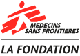
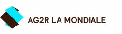
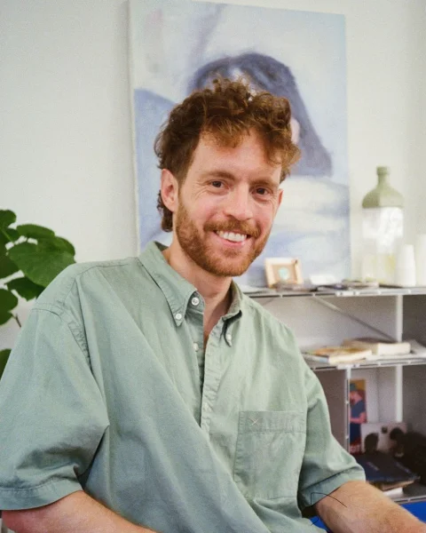

Open to full-time roles & advisory projects
I bring clarity and simplicity to demanding environments.
Lead / Senior product designer specialized in information architecture, systemic design, and accessibility. I choose projects that create genuine, positive impact — currently designing a clinical tool for MSF's fight against antimicrobial resistance.
Featured Projects
Two case studies showcasing my approach to complex, highly constrained environments.


2019 — 2022Origami — Scaling the Design System
Design Approach & Principles
I design simple, reliable digital products built for real-world use and tested against complex constraints.
01
Inclusive
Inclusivity starts with solid interface foundations: deliberate contrast, legible type, and intuitive layouts designed for broad usability.
02
Systemic
I build resilient architectures and modular design systems, mindful of their technical footprint and broader social or environmental impact.
03
End-to-end continuity
I bridge research, strategy, and engineering, working hand-in-hand with developers and domain experts through to final production.
04
Collective
Design is never done in silos: I mentor and align design teams, while actively engaging user communities throughout co-design.
Professional Experience
Over a decade of design experience leading user research, information architecture, and UI tooling.
Lead Product Designer (Antibiogo)
MSF Foundation · Full-time then FreelanceI lead the design for the Antibiogo Android medical app under IVDD/IVDR regulatory certifications. I designed the core user journeys, conducted laboratory field research, built the design system in close sync with engineering, and contributed to usability validation studies with an external partner. I now drive ongoing product evolution (user research, new features, in-app learning, and remote training).
Senior Product Designer
AatlantideI conducted UX/UI audits on core dental and medical SaaS workflows (billing, patient history) to identify usability friction points. Alongside this, I initiated the foundations of a design system and helped establish UI best practices across the team.
UX Designer then Lead UX Designer
AG2R LA MONDIALEI designed customer web portals serving 15 million policyholders and coordinated a team of 5 designers. I restructured cross-service information architecture to unify fragmented portals into a seamless experience across desktop and mobile, led co-design workshops, and spearheaded the launch and rollout of the "Origami" design system.
Digital Project Director / UX Designer Degree
Gobelins, l'école de l'imageI authored a research thesis: "The role and ethics of designers in accessibility and inclusion."
Older Professional Path
Communication, Web Design & Front-EndNearly a decade of prior experience spanning graphic design, art direction, and front-end development, before moving into product design.
Communications Officer + Web Designer
Crédit Agricole Sud Rhône AlpesCommunications Officer
CR&ON ArchitectesContent & Community Manager
Freeride World TourEditorial Writer
Nivéales média (Snowsurf & Ski Magazine)Get in Touch
I am open to lead or senior product design roles, consulting on complex product challenges, and teaching opportunities. Naturally curious and versatile, I thrive on tackling demanding problems: let's connect.
francois.ohl@gmail.com